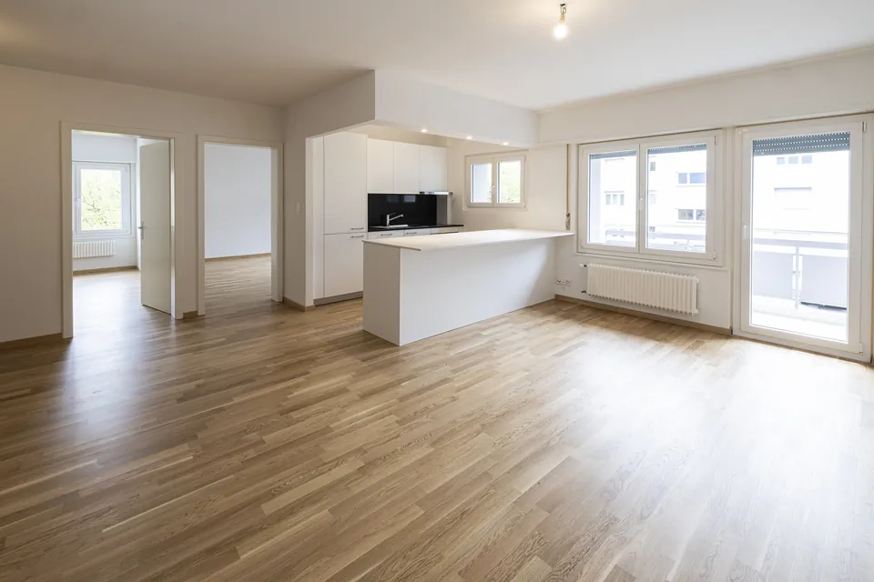

Rénovation complète à Lausanne
Appartement, maison ou immeuble repris de fond en comble. Un seul contrat, un seul responsable de chantier, une seule date de livraison.
- Durée type
- 5 à 8 semaines pour 100 m²
- Maison ou immeuble
- 10 à 14 semaines
- Devis
- Gratuit, 72 h après visite
- Défauts relevés
- Repris sous 10 jours

Prestations
Ce que couvre la page
Une rénovation complète,
tous corps de métier
Une rénovation totale, c'est dix métiers qui doivent se succéder dans le bon ordre, sans se marcher dessus. Le carreleur ne peut pas passer avant le plâtrier, le peintre ne peut pas finir avant que les sols soient posés. C'est cette coordination qui fait tenir ou déraper un chantier.
Nous prenons l'ensemble en charge. Vous signez un devis unique, vous recevez un planning daté avant le démarrage, et vous avez un seul numéro à appeler pendant toute la durée des travaux.
Nous intervenons sur des appartements de Lausanne et de ses communes voisines, sur des villas de Pully, Lutry ou Épalinges, et sur des immeubles locatifs pour le compte de régies lausannoises.
Ce que comprend la prestation 7 postes
- Dépose des revêtements, cloisons et équipements existants
- Ouverture ou création de volumes, cloisons et faux plafonds
- Reprise complète des murs et des plafonds, enduits et lissage
- Pose des sols : parquet, carrelage, vinyle, linoléum
- Mise en peinture de l'ensemble des surfaces et des boiseries
- Coordination de l'électricité, du sanitaire et de la cuisine avec nos partenaires
- Nettoyage de fin de chantier et remise des clés
Méthode
Du premier appel à la fin des travaux
Comment se déroule
une rénovation complète
-
01
Visite et mesures
Nous nous déplaçons, mesurons et notons l'état existant. La visite est gratuite et sans engagement.
-
02
Devis détaillé
72 heures après la visite, vous recevez un devis poste par poste, avec les quantités et les finitions retenues.
-
03
Planning daté
Avant le premier coup de marteau, vous avez le calendrier semaine par semaine de tous les corps de métier.
-
04
Chantier suivi
Un responsable unique pilote tous les corps de métier et vous rend compte. Le chantier est rangé chaque soir.
-
05
Fin des travaux
Visite pièce par pièce avec vous, défauts corrigés sous dix jours, puis remise des clés.
Zone
Où nous intervenons
Rénovation complète à Lausanne
et sur l'arc lémanique
Notre atelier est à Lausanne, avenue de Béthusy. Nous intervenons chaque semaine en ville — des immeubles anciens de Sous-Gare et du Vallon aux villas de Chailly et d'Épalinges — et dans les communes de l'agglomération, ainsi que sur La Côte, à Lavaux et jusqu'à Genève.
Un chantier proche, c'est une équipe qui arrive à l'heure et qui repasse sans compter quand une reprise est nécessaire. C'est la raison pour laquelle nous ne nous éloignons pas de l'arc lémanique.
Voir nos chantiers livrés dans la région.
- Lausanne
- Pully
- Prilly
- Renens
- Ecublens
- Épalinges
- Lutry
- Morges
- Nyon
- Vevey
- Montreux
- Genève
Sur le terrain
Ce que le bâti local impose
Rénover
à Lausanne
Le parc lausannois se lit par couches. Les immeubles de Sous-Gare, de Chauderon et du Vallon datent du premier tiers du vingtième siècle : hauts plafonds, parquets à lames clouées, murs en plâtre sur lattis. On y gagne des volumes magnifiques et on y trouve des surprises derrière chaque cloison.
Les quartiers de Bellevaux, Montoie et Vennes relèvent des années cinquante à soixante-dix : plans rationnels, cloisons légères, chapes fines. La rénovation y est plus prévisible, mais l'isolation phonique entre logements demande presque toujours une reprise.
Sur les hauts — Chailly, Épalinges, Le Mont — dominent les villas des années soixante-dix et quatre-vingt, très cloisonnées. L'essentiel du travail y consiste à rouvrir des volumes que l'époque avait fermés.
Questions
Ce qu'on nous demande
Vos questions sur
la rénovation complète
Puis-je rester dans le logement pendant une rénovation totale ?
C'est possible sur un chantier mené par zones, mais rarement souhaitable : une rénovation totale touche l'eau, l'électricité et les sols en même temps. Libérer les lieux raccourcit le chantier et réduit la facture.
Gérez-vous les autorisations et les demandes à la régie ?
Nous préparons les descriptifs techniques que la régie ou la copropriété réclame, et nous nous adaptons aux horaires imposés par le règlement de l'immeuble.
Autres prestations
Souvent menées ensemble
Les métiers d'une
rénovation complète

Prochaine étape
Un projet de rénovation complète ?
Nous nous déplaçons, mesurons et vous remettons un devis détaillé et gratuit 72 heures après la visite.
- Téléphone
- +41 21 847 02 02
- Courriel
- contact@dsg-renov.ch
- Horaires
- Lundi – vendredi, 08:00 – 17:00
- Atelier
- Avenue de Béthusy 60, 1012 Lausanne